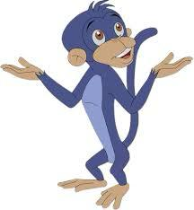

JAGGU

Description: Jaggu is Bheem's loyal pet monkey, known for his cleverness and ability to communicate through gestures and expressions.
Personality: Playful, mischievous, and fiercely protective of his friends. Jaggu often assists Bheem and the gang in their adventures.
Characteristics: Jaggu is depicted as a brown monkey with expressive eyes and is always by Bheem's side, offering support and comic relief.